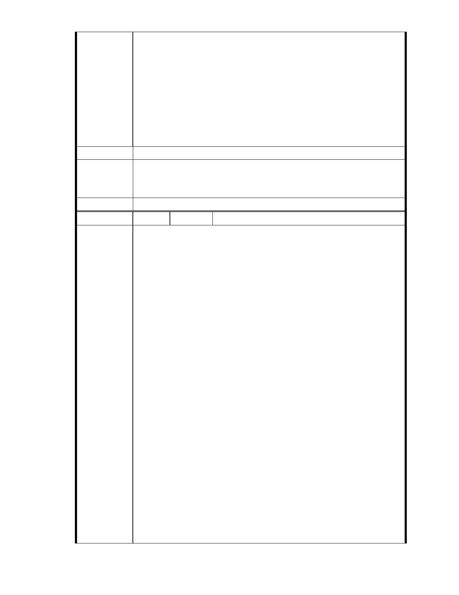

業。據悉證嚴上人過去曾經呼籲「用鼓掌的雙手做環保」、「落實環
保意識於日常生活中」、「常存對大地疼惜的心」，以及多次對「台灣
生態浩劫」表達憂心，並且間接表達反對蘇花高興建的立場。本案
之開發明顯與上人之理念與實踐相違，慈濟基金會執行階層執意要
台北市政府都市計畫委員會通過此「環境生態破壞案」，勢將陷上人
於不義，以及嚴重損害慈濟形象。爰此，謹在此緊急呼籲慈濟基金
會懸崖勒馬，立即撤回本案，並將本基地恢復為池塘或是作合乎保
護區規定之使用。
建議辦法
一、本案已進入都市計畫法定程序，後續將依都市計畫委員會審定內容
市府說明
為準。
二、相關陳情意見將納入本案審查人民意見，依法定程序辦理。
委 員 會 決 議 同編號 1。
編
號 26
陳情人 楊重信（99.11.15 於本會網站傳送資料）
給台北市都市計畫委員的一封公開信
楊重信(文化大學景觀學系教授)
（11/11/2010 公開發表於楊重信的部落格 Quovadis)
陳情理由
今日（11/11/2010）下午到台北市都市計畫委員會旁聽「慈濟基金會
申請變更保護區為社會福利特定專用區案」，會場內旁聽區座無虛席，會
場外休息室與走道也是擠滿了人，我登記發言 41 號，等到將近 6 點，終
於輪到發言，限時 3 分鐘，在那 3 分鐘內實在沒辦法充分表達意見；所
以，我給各位委員寫這封信。我已經是走在人生旅途最後一哩路的人，
本應頤養天年，不要再過問世事，但是當我知道沈寂已 3 年之慈濟基金
會申請變更保護區案又活過來時（其實是我自己誤解了，以為有智慧之
上人已經指示基金會撤銷本案了），我覺得我如果再不挺身反對，那我真
的太對不起我的專業良心了。我對於慈濟基金會挾宗教力量、借社會福
利之名，企圖破壞大湖周邊地區環境與生態，以及摧毀台北市保護區政
策之舉措只能以「深惡痛絕」一詞形容。慈濟基金會案之基地座落於保
護區，基地是池塘填土而成，基地南側與大湖僅是一路之隔、基地西北
及東側山坡地均屬潛在順向坡，北基地西北隅邊緣有基隆斷層經過、南
基地東北側為地下礦坑開採範圍，此基地不折不扣是一處高度環境敏感
地區。此種基地之開發申請案，相信各位委員只要遵守都市計畫倫理、
以及都市計畫法令規定，本著專業良知來審查應該是一個非常單純之個
案。因為，台北市保護區政策並未改變、本案基地被劃為保護區之理由
並未消失，實在找不到可以個案開放此高度環境敏感地區從事開發行為
之理由。本人相信於民國 95 年第一次審查本案之委員，如果不受到「宗
教勢力」之影響，以及被「社會福利訴求」所惑，本案當時就應該會被
駁回了，豈會拖延五年，造成社會爭議，以及浪費龐大之行政與社會資
- 31 -